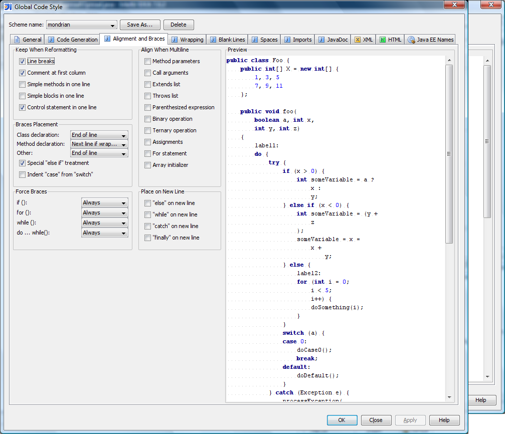

There are several ways to get Mondrian running. The easiest is to download a binary release, as described in the installation guide. But you can also build Mondrian from its source code. This document describes how to do that, how to learn about Mondrian's inner workings, and the guidelines you'll need to follow if you want to contribute to the Mondrian project.
First, you need to get a copy of the source code. You can get the source code from SourceForge or from the project's Github repository.
Download the latest mondrian-version.zip from
SourceForge, and unzip. Now find the mondrian-version-src.zip
inside this distribution, and unzip it. The directory you unzip this source code to —
typically something like C:\open\mondrian
or /usr/local/mondrian-x.y.z — will be denoted
${project.location} later in this document.
Download the Git client from Git.
Clone the Git repository.
$ git clone https://github.com/pentaho/mondrian.git
Cloning into 'mondrian'...
remote: Counting objects: 51661, done.
remote: Compressing objects: 100% (9979/9979), done.
remote: Total 51661 (delta 37833), reused 51512 (delta 37691)
Receiving objects: 100% (51661/51661), 294.25 MiB | 604 KiB/s, done.
Resolving deltas: 100% (37833/37833), done.
Mondrian requires all three versions to build correctly. When Mondrian creates JDBC connections, it creates JDBC version 3 connections with Java 1.5, version 4 connections with Java 1.6 and version 4.1 connections with Java 1.7. The factory classes that create JDBC connections(FactoryJdbc3Impl, FactoryJdbc4Impl and FactoryJdbc41Impl) need to be compiled with the matching JDK version.
JAVA_HOME_15, JAVA_HOME_16,
JAVA_HOME_17 and ANT_HOME to point at the
locations where you installed them. Set JAVA_HOME to your Java 1.5 JDK.Now build the code, as follows:
C:\mondrian> ant Buildfile: C:\mondrian\build.xml version: antcontrib.download-check: antcontrib.download: install-antcontrib: ivy.download-check: ivy.download: install-ivy: [echo] Installing IVY... resolve: [echo] symlink=${symlink} [ivy:resolve] :: Ivy 2.1.0 - 20090925235825 :: http://ant.apache.org/ivy/ :: [ivy:resolve] :: loading settings :: url = file:C:/mondrian/ivysettings.xml [ivy:resolve] :: resolving dependencies :: pentaho#mondrian-workbench;TRUNK-SNAPSHOT [ivy:resolve] confs: [default] [ivy:resolve] found commons-codec#commons-codec;1.2 in public ....more ivy messages prepare: [mkdir] Created dir: C:\mondrian\build define-tasks: parser: [javacup] Opening files... [javacup] Parsing specification from C:\mondrian\src\main\mondrian\olap\Parser.cup... [javacup] Checking specification... [javacup] Warning: Terminal "UNKNOWN" was declared but never used [javacup] Building parse tables... [javacup] Computing non-terminal nullability... [javacup] Computing first sets... [javacup] Building state machine... [javacup] Filling in tables... [javacup] *** Reduce/Reduce conflict found in state #98 [javacup] between value_expression_primary ::= NULL (*) [javacup] and term3 ::= term3 IS NULL (*) [javacup] under symbols: {EOF, AND, AS, CELL, DIMENSION, ELSE, END, IN, IS, MATCHES, MEMBER, NOT, ON, OR, PROPERTIES, RETURN, SELECT, SET, THEN, WHEN, XOR, COLON, COMMA, EQ, GE, GT, LE, LT, NE, RBRACE, RPAREN} [javacup] Resolved in favor of the second production. [javacup] [javacup] *** Shift/Reduce conflict found in state #98 [javacup] between value_expression_primary ::= NULL (*) [javacup] under symbol EOF [javacup] Resolved in favor of shifting. ....more javacup messages [javacup] Checking for non-reduced productions... [javacup] Writing parser... [javacup] Closing files... [javacup] ------- CUP v0.10k Parser Generation Summary ------- [javacup] 0 errors and 64 warnings [javacup] 69 terminals, 67 non-terminals, and 147 productions declared, [javacup] producing 224 unique parse states. [javacup] 1 terminal declared but not used. [javacup] 0 non-terminal declared but not used. [javacup] 0 productions never reduced. [javacup] 63 conflicts detected (63 expected). [javacup] Code written to "Parser.java", and "ParserSym.java". [javacup] ---------------------------------------------------- (v0.10k) [javacc] Java Compiler Compiler Version 5.0 (Parser Generator) [javacc] (type "javacc" with no arguments for help) [javacc] Reading from file C:\mondrian\src\main\mondrian\parser\MdxParser.jj . . . [javacc] Note: UNICODE_INPUT option is specified. Please make sure you create the parser/lexer using a Reader with the correct character encoding. [javacc] File "TokenMgrError.java" does not exist. Will create one. [javacc] File "ParseException.java" does not exist. Will create one. [javacc] File "Token.java" does not exist. Will create one. [javacc] File "SimpleCharStream.java" does not exist. Will create one. [javacc] Parser generated successfully. generate.resources: [javac] Compiling 7 source files to C:\mondrian\classes [resgen] Generating C:\mondrian\src\main\mondrian\resource\MondrianResource.java [resgen] Generating C:\mondrian\classes\mondrian\resource\MondrianResource.properties [resgen] Generating C:\mondrian\src\main\mondrian\resource\MondrianResource_en_US.java [resgen] Generating C:\mondrian\classes\mondrian\resource\MondrianResource_en_US.properties [resgen] Generating C:\mondrian\src\main\mondrian\resource\MondrianResource_de_DE.java [resgen] Generating C:\mondrian\classes\mondrian\resource\MondrianResource_de_DE.properties [resgen] Generating C:\mondrian\src\main\mondrian\resource\MondrianResource_de.java [resgen] Generating C:\mondrian\classes\mondrian\resource\MondrianResource_de.properties [resgen] Generating C:\mondrian\src\main\mondrian\resource\MondrianResource_es_ES.java [resgen] Generating C:\mondrian\classes\mondrian\resource\MondrianResource_es_ES.properties generate.properties: [javac] Compiling 1 source file to C:\mondrian\classes [java] Generating src\main\mondrian\olap\MondrianProperties.java [java] Generating doc\properties.html [java] Generating mondrian.properties.template def: [xomgen] Writing C:\mondrian\src\main\mondrian\olap\mondrian.dtd [xomgen] Writing C:\mondrian\src\main\mondrian\olap\MondrianDef.java [xomgen] Done [copy] Copying 1 file to C:\mondrian\lib [xomgen] Writing C:\mondrian\src\main\mondrian\gui\mondrian_SW.dtd [xomgen] Writing C:\mondrian\src\main\mondrian\gui\MondrianGuiDef.java [xomgen] Done [copy] Copying 1 file to C:\mondrian\lib [xomgen] Writing C:\mondrian\src\main\mondrian\xmla\datasourcesconfig.dtd [xomgen] Writing C:\mondrian\src\main\mondrian\xmla\DataSourcesConfig.java [xomgen] Done [copy] Copying 1 file to C:\mondrian\lib compileJdk15: [exec] Using ANT_HOME: C:/Java/apache-ant-1.8.4 [exec] Using JAVA_HOME: C:/Java/jdk1.5.0_22 [exec] Using JAVACMD: C:/Java/jdk1.5.0_22\bin\java.exe [exec] Using Ant arguments: -Drequested.java.version=jdk1.5 compile.java [exec] Buildfile: C:\mondrian\build.xml [exec] [exec] apologise: [exec] [exec] compile.java: [exec] [echo] Compiling on JVM Version: 1.5.0_22-b03 [exec] [javac] Compiling 722 source files to C:\mondrian\classes [exec] [javac] Note: Some input files use or override a deprecated API. [exec] [javac] Note: Recompile with -Xlint:deprecation for details. [exec] [javac] Note: Some input files use unchecked or unsafe operations. [exec] [javac] Note: Recompile with -Xlint:unchecked for details. [exec] [copy] Copying 1 file to C:\mondrian\classes [exec] [exec] BUILD SUCCESSFUL [exec] Total time: 9 seconds compileJdk16: [exec] Using ANT_HOME: C:/Java/apache-ant-1.8.4 [exec] Using JAVA_HOME: c:/Java/jdk1.6.0_35 [exec] Using JAVACMD: c:/Java/jdk1.6.0_35\bin\java.exe [exec] Using Ant arguments: -Drequested.java.version=jdk1.6 compile.java [exec] Buildfile: C:\mondrian\build.xml [exec] [exec] apologise: [exec] [exec] compile.java: [exec] [echo] Compiling on JVM Version: 1.6.0_35-b10 [exec] [javac] Compiling 3 source files to C:\mondrian\classes [exec] [javac] Note: C:\mondrian\src\main\mondrian\util\UtilCompatibleJdk16.java uses unchecked or unsafe operations. [exec] [javac] Note: Recompile with -Xlint:unchecked for details. [exec] [exec] BUILD SUCCESSFUL [exec] Total time: 2 seconds compileJdk17: [exec] Using ANT_HOME: C:/Java/apache-ant-1.8.4 [exec] Using JAVA_HOME: c:/Java/jdk1.7.0_07 [exec] Using JAVACMD: c:/Java/jdk1.7.0_07\bin\java.exe [exec] Using Ant arguments: -Drequested.java.version=jdk1.7 compile.java [exec] Buildfile: C:\mondrian\build.xml [exec] [exec] apologise: [exec] [exec] compile.java: [exec] [echo] Compiling on JVM Version: 1.7.0_07-b11 [exec] [javac] Compiling 1 source file to C:\mondrian\classes [exec] [exec] BUILD SUCCESSFUL [exec] Total time: 1 second compile: info: [echo] ============================================================== [echo] | Mondrian configuration info | [echo] ============================================================== [echo] project.location = C:\mondrian [echo] jdk.home = C:/Java/jdk1.5.0_22 [echo] log4j.configuration = log4j.properties [echo] mondrian.foodmart.catalogURL = file:C:\mondrian/demo/FoodMart.xml [echo] mondrian.foodmart.jdbcURL = jdbc:mysql://localhost/foodmart?user=foodmart&password=foodmart [echo] mondrian.jdbcDrivers = com.mysql.jdbc.Driver [echo] driver.classpath (additions) = C:/Java/jdbc/mysql-connector-java-5.1.22-bin.jar [echo] ============================================================== compile.tests: [echo] Test Classpath: C:\mondrian\lib\ant-launcher.jar [echo] C:\mondrian\lib\ant.jar ...more classpath messages [javac] Compiling 174 source files to C:\mondrian\testclasses [javac] Note: Some input files use or override a deprecated API. [javac] Note: Recompile with -Xlint:deprecation for details. [javac] Note: Some input files use unchecked or unsafe operations. [javac] Note: Recompile with -Xlint:unchecked for details. check-FoodMartCreateData-uptodate: unzip-FoodMartCreateData: [unzip] Expanding: C:\mondrian\demo\FoodMartCreateData.zip into C:\mondrian\demo check-FoodMartAccessDB-uptodate: unzip-FoodMartAccessDB: [unzip] Expanding: C:\mondrian\demo\access\MondrianFoodMart-Access.zip into C:\mondrian\demo\access check-FoodMartDerbyDB-uptodate: unzip-FoodMartDerbyDB: [unzip] Expanding: C:\mondrian\demo\derby\derby-foodmart.zip into C:\mondrian\demo\derby unzip-databases: all: BUILD SUCCESSFUL Total time: 32 seconds
Pay close attention to the Ant targets named compileJdk1.5, compileJdk1.6 and compileJdk1.7, and ensure that each JVM compilation phase has compiled the files it needed to. The JDK 1.5 should compile about 700+ files. The JDK 1.6 must compile the JDBC 4.0 classes (3 files) and JDK 1.7 should compile the JDBC 4.1 driver (1 file). In each compileJdk1.x target, the first target is called "apologise:", and must produce no output.
Before you run the regression test suite or the web application, you must install the standard FoodMart dataset. This is described in the installation guide.
If you got your files from GitHub, you can skip the step
where you download the data sets: you should already have the files demo/access/MondrianFoodMart.mdb
and demo/FoodMartCreateData.zip.
You will need to update your mondrian.properties in order to connect to the FoodMart database during the test. The important properties are:
| Property | Description | Example (MySQL) |
|---|---|---|
| mondrian.foodmart.jdbcURL | JDBC URL to connect to your database. Required | jdbc:mysql://localhost:3307/foodmart |
| mondrian.foodmart.jdbcUser | User name for database connection. Required | root |
| mondrian.foodmart.jdbcPassword | Password for database connection. Required | password |
| mondrian.jdbcDrivers | List of paths to JDBC driver JARs as a valid classpath. The paths can be relative to the root of the installation. Required | testlib/mysql-connector-java-3.1.11-bin.jar |
There is a target in the build script, load-foodmart, that will load the Foodmart data into an empty database configured through your mondrian.properties settings. For this target, you can set an additional property in mondrian.properties, mondrian.foodmart.jdbcSchema=<your schema> if you are using a database that supports schemas and you want to load Foodmart into a particular schema.
At the command line:
cd ${project.location}
ant test
Running the test via the Mondrian Ant build in Eclipse works, too.
Example output:
Buildfile: build.xml
Overriding previous definition of reference to jdk
prepare:
[mkdir] Created dir: C:\open\mondrian\build
parser:
[javacup] Opening files...
[javacup] Parsing specification from
C:\open\mondrian\src\main\mondrian\olap\Parser.cup...
[javacup] Checking specification...
[javacup] Warning: Terminal "UNKNOWN" was declared but never used
[javacup] Warning: Non terminal "unsigned_integer" was declared but never used
[javacup] Building parse tables...
[javacup] Computing non-terminal nullability...
[javacup] Computing first sets...
[javacup] Building state machine...
[javacup] Filling in tables...
[javacup] *** Reduce/Reduce conflict found in state #99
[javacup] between value_expression_primary ::= NULL (*)
[javacup] and term3 ::= term3 IS NULL (*)
[javacup] under symbols: {EOF, AND, AS, CELL, DIMENSION, ELSE, END, IN, IS,
MATCHES, MEMBER, NOT, ON, OR, PROPERTIES, SELECT, SE
T, THEN, WHEN, XOR, COLON, COMMA, EQ, GE, GT, LE, LT, NE, RBRACE, RPAREN}
[javacup] Resolved in favor of the second production.
[javacup] *** Shift/Reduce conflict found in state #99
[javacup] between value_expression_primary ::= NULL (*)
[javacup] under symbol EOF
[javacup] Resolved in favor of shifting.
...
[javacup] *** Shift/Reduce conflict found in state #99
[javacup] between term3 ::= term3 IS NULL (*)
[javacup] under symbol RPAREN
[javacup] Resolved in favor of shifting.
[javacup] Checking for non-reduced productions...
[javacup] Writing parser...
[javacup] Closing files...
[javacup] ------- CUP v0.10k Parser Generation Summary -------
[javacup] 0 errors and 63 warnings
[javacup] 56 terminals, 60 non-terminals, and 125 productions declared,
[javacup] producing 194 unique parse states.
[javacup] 2 terminals declared but not used.
[javacup] 0 non-terminals declared but not used.
[javacup] 0 productions never reduced.
[javacup] 61 conflicts detected (61 expected).
[javacup] Code written to "Parser.java", and "ParserSym.java".
[javacup] ---------------------------------------------------- (v0.10k)
generate.resources:
[javac] Compiling 3 source files to C:\open\mondrian\classes
[resgen] Generating
C:\open\mondrian\src\main\mondrian\resource\MondrianResource.java
[resgen] Generating
C:\open\mondrian\classes\mondrian\resource\MondrianResource.properties
[resgen] Generating
C:\open\mondrian\src\main\mondrian\resource\MondrianResource_en_US.java
[resgen] Generating
C:\open\mondrian\classes\mondrian\resource\MondrianResource_en_US.properties
[resgen] Generating
C:\open\mondrian\src\main\mondrian\resource\MondrianResource_de_DE.java
[resgen] Generating
C:\open\mondrian\classes\mondrian\resource\MondrianResource_de_DE.properties
[resgen] Generating
C:\open\mondrian\src\main\mondrian\resource\MondrianResource_de.java
[resgen] Generating
C:\open\mondrian\classes\mondrian\resource\MondrianResource_de.properties
[resgen] Generating
C:\open\mondrian\src\main\mondrian\resource\MondrianResource_es_ES.java
[resgen] Generating
C:\open\mondrian\classes\mondrian\resource\MondrianResource_es_ES.properties
def:
[xomgen] Writing src\main\mondrian\olap\mondrian.dtd
[xomgen] Writing src\main\mondrian\olap\MondrianDef.java
[xomgen] Done
[copy] Copying 1 file to C:\open\mondrian\lib
[copy] Copying 1 file to C:\open\mondrian\lib
[xomgen] Writing src\main\mondrian\xmla\datasourcesconfig.dtd
[xomgen] Writing src\main\mondrian\xmla\DataSourcesConfig.java
[xomgen] Done
[copy] Copying 1 file to C:\open\mondrian\lib
compile.java:
[javac] Compiling 987 source files to C:\open\mondrian\classes
[javac] Note: Some input files use or override a deprecated API.
[javac] Note: Recompile with -Xlint:deprecation for details.
[javac] Note: Some input files use unchecked or unsafe operations.
[javac] Note: Recompile with -Xlint:unchecked for details.
check-FoodMartCreateData-uptodate:
unzip-FoodMartCreateData:
[unzip] Expanding: C:\open\mondrian\demo\FoodMartCreateData.zip into
C:\open\mondrian\demo
check-FoodMartAccessDB-uptodate:
unzip-FoodMartAccessDB:
[unzip] Expanding: C:\open\mondrian\demo\access\MondrianFoodMart-Access.zip into
C:\open\mondrian\demo\access
check-FoodMartDerbyDB-uptodate:
unzip-FoodMartDerbyDB:
[unzip] Expanding: C:\open\mondrian\demo\derby\derby-foodmart.zip into
C:\open\mondrian\demo\derby
compile:
compile.tests:
[javac] Compiling 69 source files to C:\open\mondrian\testclasses
[javac] Note: C:\open\mondrian\testsrc\main\mondrian\test\ParameterTest.java uses or overrides a deprecated API.
[javac] Note: Recompile with -deprecation for details.
test-dbms:
[echo] Connecting to jdbc:postgresql://localhost/FM3
[java] Mondrian: properties loaded from 'file:/C:/open/mondrian/mondrian.properties'
[java] Mondrian: properties loaded from 'file:/C:/open/mondrian/build.properties'
[java] Mondrian: loaded 4 system properties
[java] testName: null
[java] testClass: null
[java] All 1 thread(s) started.
[java] Mondrian: JDBC driver org.postgresql.Driver loaded successfully
[java] Mondrian: JDBC driver sun.jdbc.odbc.JdbcOdbcDriver loaded successfully
[java] Mondrian: JDBC driver com.mysql.jdbc.Driver loaded successfully
[java] Mondrian: JDBC driver oracle.jdbc.OracleDriver loaded successfully
[java] [0] ........................................
[java] [40] ........................................
[java] [80] ........................................
[java] [120] ........................................
[java] [160] ........................................
[java] [200] ........................................
[java] [240] ........................................
[java] [280] ........................................
[java] [320] ........................................
[java] [360] ........................................
[java] [400] ........................................
[java] [440] ........................................
[java] [480] ........................................
[java] [520] ........................................
[java] [560] ........................................
[java] [600] ..................
[java] OK (618 tests)
[java] Time: 711.63
[java] Normal termination.
BUILD SUCCESSFUL
Total time: 12 minutes 13 seconds
At the command prompt, type
ant war
This will create lib/mondrian.war. Copy mondrian.war
to the TOMCAT_HOME/webapps directory.
Now, start Tomcat and hit http://localhost:8080/mondrian.
If you don't have one already, you can create a free GitHub account here.
The first thing you need to do is fork the Pentaho repository into your GitHub account. This creates an exact copy of the Pentaho repo as it exists at the time of the fork in your personal GitHub space. This copy is not updated as the Pentaho repository gets updated, but we'll cover how to keep it updated later.
From the Mondrian repository page click the Fork button near the top right. Once you have done this, GitHub will redirect you to your newly forked repository.
Mondrian works on a single repository with multiple branches containing the different versions – past, released and in development. You should never be working against the master branch without permission from the Mondrian development team. Always work against the repository specific to the version you are developing for. Cloning the repository moves all the data and metadata from all branches to your local working folder, and you then checkout a specific branch locally to setup the file structure for that version.
First, clone the repository:
$ git clone https://github.com/[username]/mondrian.git
Cloning into 'mondrian'...
remote: Counting objects: 51661, done.
remote: Compressing objects: 100% (9979/9979), done.
remote: Total 51661 (delta 37833), reused 51512 (delta 37691)
Receiving objects: 100% (51661/51661), 294.25 MiB | 604 KiB/s, done.
Resolving deltas: 100% (37833/37833), done.
Now change into the newly created 'mondrian' folder and list the
available branches:
$ git branch -a
master
remotes/origin/3.0
remotes/origin/3.1
remotes/origin/3.2
remotes/origin/3.2.2
remotes/origin/3.3.1
remotes/origin/3.4
remotes/origin/HEAD -> origin/master
remotes/origin/lagunitas
remotes/origin/master
remotes/origin/pacino
And finally checkout the branch you want to work on:
$ git checkout 3.4
Branch 3.4 set up to track remote branch 3.4 from origin.
Switched to a new branch '3.4'
In order to be able to keep your repository up-to-date with the Pentaho Mondrian repository, and to be able to merge your changes with changes made while you were developing your feature, we will add a new remote called 'upstream' that will point to the Pentaho repository directly.
$ git remote add upstream git://github.com/pentaho/mondrian.gitYou also want to disable fast-forward during merges to preserve the entire commit history and properly track file changes.
$ git config --add merge.ff falseNote: If you have a git version prior to 1.7.6, this option will do nothing.
Your repository is now ready to develop against your selected branch.
It is important during development that you keep your repository updated with any changes made to the Pentaho Mondrian repository. This not only ensures that you are always working with the most recent code available for your working branch, but also ensures that your changes do not break any new or updated tests.
To update and merge changes from the upstream repository, do the following:
$ git fetch upstream [branch]
$ git merge upstream/[branch]Where [branch] is the current branch you're working on.
If you are using a version of git prior to 1.7.6, you need to add the
––no–ff flag in order to disable fast–forward merges:
$ git merge --no-ff upstream/[branch]
If there are any merge conflicts, git will let you know. Otherwise, your local repository is now up-to-date without losing any of your working changes.
This should always be the 2nd last step performed before issuing a pull request. The last step being, of course, running the tests again after the merge to ensure nothing is broken.
Before starting a pull request, please make sure the following criteria are met or your request may not be accepted and merged, or may take much longer to be merged into the Pentaho Mondrian repository.
A pull request is the way GitHub manages the process of merging changes between forked repositories. Generating a pull request starts a conversation with the Pentaho Mondrian development team asking them to review the changes you've made, comment on them, and optionally choose to merge the changes into the main repository or return them to you for additional changes.
When you are ready to start a pull request, go to your personal Mondrian
fork on GitHub and select the branch you want to be merged. Then click the
Pull Request button near the top of the page.
You can then fill in a title and notes related to the pull request, and click the Send pull request button. The Mondrian development team will be notified of the pull request and will continue the process from there.
For a more detailed description of the entire pull request and commenting process, see Help.GitHub – Send pull requests
If you are contributing code, please follow the same guidelines used for the rest of the code. ("When in Rome, do as the Romans do.")
Code content:
Documentation and comments:
Spacing and indentation:
The following images show my code style settings in IntelliJ. If you use IntelliJ, plug in these settings; if not, they should give you an idea of the code formatting policy.




If the files you are submitting do not pass the checkFile utility, your pull
request may be delayed or denied. It is recommended that you run checkFile
locally before initiating a pull request. The utility is located in your git
repository under the bin directory.
https://github.com/pentaho/mondrian/tree/master/bin/checkFile
The script requires cygwin to run on
Windows.
Usage:
checkFile [ <options> ] <file>...
Checks a list of files.
checkFile [ <options> ] --opened
Checks all files that are opened in git. Implies --strict.
checkFile [ <options> ] --under <dir>
Recursively checks all files under a given directory.
checkFile --help
Prints this help.
Options:
--lenient
Does not apply rules to components which are not known to
be in compliance.
--strict
Stricter than usual; the opposite of lenient.
If you're feeling mystified where the various SQL statements come from, here's a good way to learn more. Give it a try, and if you have more questions I'll be glad to answer them.
In a debugger, put a break point in the
RolapUtil.executeQuery()
method, and run a
simple query. The easiest way to run a query is to run a junit testcase such as
BasicQueryTest.testSample0().
The debugger will stop every time a SQL
statement is executed, and you should be able to loop up the call stack to which component is executing the query.
I expect that you will see the following phases in the execution:
schema.xml file is read
(validating calculated members and named sets, resolving default members of
hierarchies, and such)[Store].[USA].[CA], it will
look all members of the [Store Nation] level, then look up all children
of the [USA] member.)
[Product].children are evaluated.
Remember that the purpose of these queries is to populate cache. There are two caches. The dimension cache which maps a member to its children, e.g.
[Store].[All Stores]→{ [Store].[USA], [Store].[Canada], [Store].[Mexico]}
The aggregation cache maps a tuple a measure value, e.g.
([Store].[USA], [Gender].[F], [Measures].[Unit Sales])→123,456
Once the cache has been populated, the query won't be executed again. That's why I recommend that you restart the process each time you run this in the debugger.
Author: Julian Hyde; last updated August, 2011.
Version: $Id$
(log )
Copyright (C) 2005-2011 Pentaho